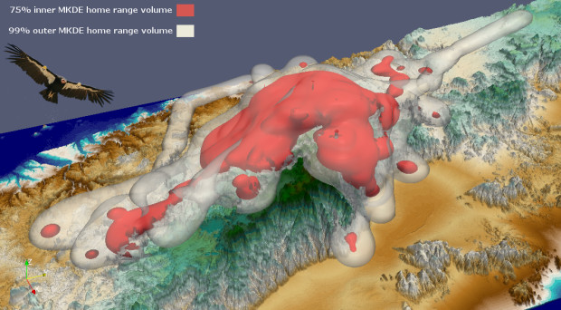
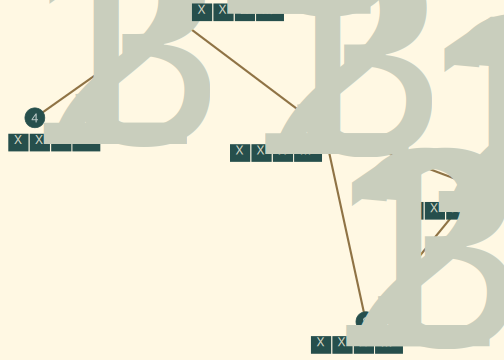
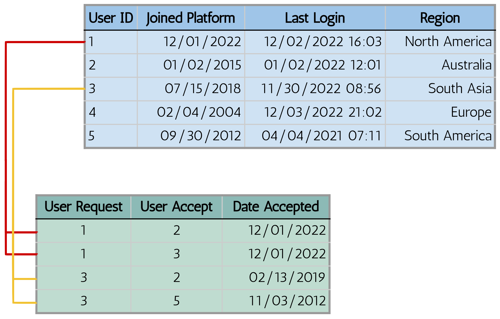
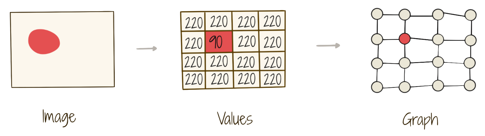

This was Euclid’s response when asked by Ptolemy if no shorter road to geometry existed than through his Elements.1
For the past year I’ve been working with a team of folks at Fetch to develop and productionalize a machine learning based document understanding pipeline powering the core of the Fetch app. At Fetch, we reward our users for snapping pictures of their receipts in real-time, and we do the heavy lifting with this pipeline.
During this process, one of the things I’ve spent more time trying to do is understand unstructured data (such as images of receipts and the language which appears on them) in more elegant ways. This led me to a new and exciting place flourishing within the ML community: Graph Machine Learning (Graph ML).
This post is about some of the things I’ve learned participating in the Graph ML and Geometric Deep Learning communities. This post is also about some of the things I’ve had to forget when applying Graph ML in large-scale industrial settings.
Graphs Are All Around Us
When first learning about graphs, one usually encounters something like the following:
A collection of nodes or vertices represented as dark green circles connected by edges or links which indicate some pairwise relationship between two nodes.
Graphs are incredibly simple yet flexible data structures. There is no notion of left, right, up, or down. Nodes and edges and can be added or omitted as we please. We can also move, bend, and reorder the nodes without changing the underlying relational structure of the graph. That is, without changing the fundamental nature of the graph itself. For example, below I’ve moved some of the nodes of the graph around and switched node 3 and node 5.
Despite these modifications, the graph describes the same basic relational structure. We refer to this underlying structure as the graph’s connectivity or the topology of the graph. The graph’s topology is agnostic of where we position these nodes in space, or what we name individual nodes.
This also means graphs exist outside of Euclidean space where we have explicit notions of distance and direction. I have no way of telling if node 3 is closer to node 4 or node 5 even though they appear father apart in the two examples above. Graphs like these, in their most basic form, do not model Euclid’s geometry. Perhaps there is a shorter road after all?
What Happens When We See Them
One of the reasons Graph ML is such an exciting space is just how abundant graphs are. Graph ML is being used to model particle physics, where particles are represented as nodes and their physio-chemical interactions represented as edges.2 We also see social networks where user-profiles are nodes and their friendships, followers, or interactions form edges; financial networks with bank accounts as nodes and their transactions as edges of varying amounts; and even more recently, documents.
As data scientists and machine learners, our main goal is to make sense of the world around us. We do some of that by building models in and through which our understanding may grow. When we begin to see graph structure and its natural projections onto the world, we unlock a deeper and more organic connection by which to explain and infer phenomena. Graphs unlock this connection by blending topological and geometric perspectives.
Adding Geometry to Graphs
For machines to learn on data, be it graph-structured or not, we must represent it in a way computers can digest. That is to say, we must encode the data into some n-dimensional Euclidean vector space where individual data points become vectors within that space.
Consider GPS telemetry data used to monitor the movement of a newly released California Condor.4

The data used to make that visualization might look something like this:
Condor GPS Telemetry Data
Time
Condor
Latitude
Longitude
Altitude
0.12
190
36.4818
-121.1809
213
0.22
1031
36.4836
-121.1879
198
0.25
1031
36.4838
-121.1860
210
0.28
1031
36.4818
-121.1809
256
Notes:
— The Time column is normalized from 0 to 1 which represent the start and end of the tracking period, respectively.
— Each condor has an identification number. Condor 190 is Redwood Queen and Condor 1031 is one of her offspring, Iniko. Redwood Queen and Iniko are real California Condors which are part of the free-ranging Central California flock! They have an amazing story.
We want to represent each row in the table as a vector.5 However, the Latitude and Longitude coordinate system is part of a fundamentally different type of geometry: a non-Euclidean one native to the 3-dimensional ellipsoidal shape of the Earth. We can convert this non-Euclidean space to a 2-d Euclidean space in the traditional Cartesian coordinate system by using the Universal Transverse Mercator (UTM) map projection.6 The UTM projection gives us an \((easting, \ northing)\) point for each point in \((latitude, \ longitude)\) space.
After we have performed the mapping all of our data can be represented in a 5-d Euclidean vector space where each vector fully describes a row in our data.
This process introduces a consistent geometry to our data. That is, we can now understand the space our data exists within through its shape, size, distance, and relative position. Below, I visualize the Condor GPS Telemetry vector space, using some liberties to represent the Time and Condor dimensions as hue and point-shape, respectively.
Embedding our data into a vector space allows us to leverage Euclid’s Elements and everything built upon them. We can compare how similar two vectors are by using methods like cosine similarity or feed these vectors into machine learning models as features to learn upon.
When our data has an inherent graph structure, the process is no different. We simply associate feature vectors with their given nodes or edges. Let’s take our first graph from this post and re-imagine it as a representation of a small social network where nodes are user-profiles and edges indicate friendships between them.

For each node we have added a feature vector which holds some information about those user-profiles such as how long they have been on the platform \(x_1\), when they last logged on \(x_2\), their geographic region \(x_3\), and so on.
Assigning feature vectors to the graph overlays a Euclidean geometry upon it. We can no longer move, bend, or switch nodes on the graph because each node now exists at a certain point in our feature-vector space. Moving the node would change its underlying meaning.
The Intersection of Topology and Geometry
Graphs allow us to represent features alongside additional relationships and structure. Introducing a flexible topological structure in which Euclidean geometry can be embedded can help our models understand and generalize better.
Relational data is the most abundant type of data across industry, yet it is not often thought about in terms of its inherent graph structure.7 A simple database representation of our small social network below depicts the relational structure which can be explicitly embedded as the edges of a graph.

Each row in the user table (blue) holds information about a node in our graph while each row in the friendship table (green) represents an edge between the user who made the friend request and the user whom accepted. Each user can have many friendships (shown by colored lines).
In this sense, all relational databases can be seen as graphs which allow for complex topologies through primary and foreign key relations like the one-to-many relationship we see above. The intuition behind adding this friendship-structure is that we can learn more about a user by also looking at who they are friends with and the attributes of those friends.
An extremely common modelling task on relational data of social networks is predicting user churn. We want to know which users are likely to drop off the platform and perhaps intervene. A tabular machine learning model might ingest the rows of the user table as features and learn to recognize patterns about certain types of users and their behavior which makes them likely to attrite.
This may work relatively well, however, it ignores the underlying topology of friendship such users find themselves in. Consequently, we lose the ability to answer questions like: if a user’s friends churn, are they more likely to churn themselves? The graph-based approach allows us to answer this question because we can capture, for each row in the data, additional information about relationships between rows.8Cvitkovic (2020) shows incorporating the connectivity of relational data through graphs is especially useful when many tables and foreign key relationships belong to a relational database.9
Graphs unlock this capability by incorporating topological structure as an inductive bias alongside features rather than as an additional feature. Acknowledging the inherent topology of our data helps models better understand how to learn rather than expanding what to learn.
Topology, All Along
Topological structure need not conform to the Euclidean feature-space. Graphs force us to understand this through their non-Euclidean connectivity. However, a different kind of topology has been lurking alongside us all along the way.
When we think about the data most machine learning operates on such as tables, text, or images, we don’t usually speak about topology. That is because these data types all enforce a strict regular topology that doesn’t give us much signal to learn on. Images, for example, are represented as a regular grid of pixel values which can also be transformed into a graph.10

The structure of the pixel-grid will not change from image to image. That means the topology of the data can’t help us understand what the image is of. All of the signal which differentiates images is held in the 2-d Euclidean pixel-space rather than the topology of the pixel-space. The same case can be made for text data in a 1-d space, or any n-dimensional Euclidean vector space (like that of our Condor GPS telemetry) because there is always regular grid structure.
Machine learning canon evolved using Euclidean data and enforced this regular topology implicitly. The invariances of the regular grid-structure were built into the models.11 As an artifact, much of machine learning has bound model architecture and input structure. Geometric Deep Learning is carving a different paradigm in which models are designed to understand and exploit the topological and geometric properties of their inputs. Models of this paradigm can adapt to different and more complex topology induced by graphs, symmetry groups, and manifolds by allowing for dynamic computation graphs.12
To Blog Is To Forget
Looking back over the past year, I’d be remiss to not speak on the effects of entering into the fold through my own journey developing large-scale document AI systems. Document AI is a field which uses AI to comprehend documents such as scanned invoices, emails, legal filings, and in my experience: receipts.13 It is broad and touches a wide range of AI specialties: CV, NLP, and even more recently Graph ML.14
Once brought into the fold of Graph ML, it can be hard to stop seeing graphs everywhere you look and especially hard to not send your CV and NLP colleagues blogs about how CNNs and transformers are just special cases of graph neural networks. Yes, pretty much everything is a graph or can be molded into one, but doing so isn’t always useful. Ignoring topology can help to not distract models (and the people who build them) when it lacks useful information. It also allows for highly-optimized and -parallelizable architectures rather than ones which are more flexible but have to unfurl computation graphs dynamically.
Through sheer luck and an amazing group of colleagues and mentors, my past year led me to explore Graph ML and the Geometric Deep Learning paradigm to search for and uncover a hidden semantic topology within the documents we process. While I can’t say what this means for the future, I can say I have grown more than I could have imagined and I’m excited to see what 2023 holds.
As for Ptolemy, I’ve found another answer. The shortest road between two points isn’t always a straight line. . .
References
Bronstein, Michael M., Joan Bruna, Yann LeCun, Arthur Szlam, and Pierre Vandergheynst. 2016. “Geometric Deep Learning: Going Beyond Euclidean Data.”CoRR abs/1611.08097. http://arxiv.org/abs/1611.08097.
Chen, Lu, Xingyu Chen, Zihan Zhao, Danyang Zhang, Jiabao Ji, Ao Luo, Yuxuan Xiong, and Kai Yu. 2021. “WebSRC: A Dataset for Web-Based Structural Reading Comprehension.”CoRR abs/2101.09465. https://arxiv.org/abs/2101.09465.
Cvitkovic, Milan. 2020. “Supervised Learning on Relational Databases with Graph Neural Networks.”arXiv Preprint arXiv:2002.02046. https://doi.org/10.48550/arXiv.2002.02046.
Gemelli, Andrea, Sanket Biswas, Enrico Civitelli, Josep Lladós, and Simone Marinai. 2022. “Doc2Graph: A Task Agnostic Document Understanding Framework Based on Graph Neural Networks.” arXiv. https://doi.org/10.48550/ARXIV.2208.11168.
Guillaume Jaume, Jean-Philippe Thiran, Hazim Kemal Ekenel. 2019. “FUNSD: A Dataset for Form Understanding in Noisy Scanned Documents.” In Accepted to ICDAR-OST.
Hauser, Michael, and Asok Ray. 2017. “Principles of Riemannian Geometry in Neural Networks.” In Advances in Neural Information Processing Systems, edited by I. Guyon, U. Von Luxburg, S. Bengio, H. Wallach, R. Fergus, S. Vishwanathan, and R. Garnett. Vol. 30. Curran Associates, Inc. https://proceedings.neurips.cc/paper/2017/file/0ebcc77dc72360d0eb8e9504c78d38bd-Paper.pdf.
Huang, Zheng, Kai Chen, Jianhua He, Xiang Bai, Dimosthenis Karatzas, Shijian Lu, and C. V. Jawahar. 2021. “Icdar2019 Competition on Scanned Receipt OCR and Information Extraction.”CoRR abs/2103.10213. https://arxiv.org/abs/2103.10213.
Kumar, Srijan, Robert West, and Jure Leskovec. 2016. “Disinformation on the Web: Impact, Characteristics, and Detection of Wikipedia Hoaxes.” In Proceedings of the 25th International World Wide Web Conference.
Liu, Can, Li Sun, Xiang Ao, Jinghua Feng, Qing He, and Hao Yang. 2021. “Intention-Aware Heterogeneous Graph Attention Networks for Fraud Transactions Detection.” In Proceedings of the 27th ACM SIGKDD Conference on Knowledge Discovery & Data Mining, 3280–88. KDD ’21. New York, NY, USA: Association for Computing Machinery. https://doi.org/10.1145/3447548.3467142.
Morrow, Glenn R. 1992. Proclus: A Commentary on the First Book of Euclid’s Elements. Princeton University Press.
Shlomi, Jonathan, Peter Battaglia, and Jean-Roch Vlimant. 2020. “Graph Neural Networks in Particle Physics.”Machine Learning: Science and Technology 2 (2): 021001. https://doi.org/10.1088/2632-2153/abbf9a.
Stokes, Jonathan M., Kevin Yang, Kyle Swanson, Wengong Jin, Andres Cubillos-Ruiz, Nina M. Donghia, Craig R. MacNair, et al. 2020. “A Deep Learning Approach to Antibiotic Discovery.”Cell 180 (4): 688–702.e13. https://doi.org/https://doi.org/10.1016/j.cell.2020.01.021.
If we have data that is not represented with numbers, than there are feature encoding processes which are used to turn categorical or lexical data, for example, into real-numbers such that they can still be digested by the computer as numeric vectors.↩︎
Map projections are not perfect, and some distortion will occur depending on the reference point of the mapping.↩︎
Using this approach does not mean we must use graph-based models such as GNNs to perform the downstream task. We can use any graph-based embedding method to generate embedding which capture this additional structure. These embeddings can then be used like any other embedding input into traditional tabular models.↩︎
Industrial application of document AI is equally broad, and includes, identifying types of documents (image classification), making document text searchable (optical character recognition), extracting specific pieces of text (key information extraction), and answering questions about documents (document question answering). Seehttps://huggingface.co/blog/document-ai.↩︎